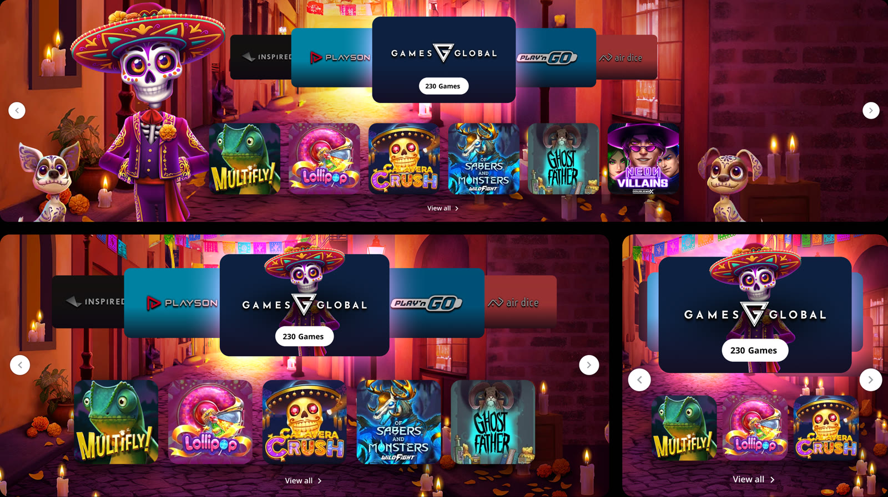
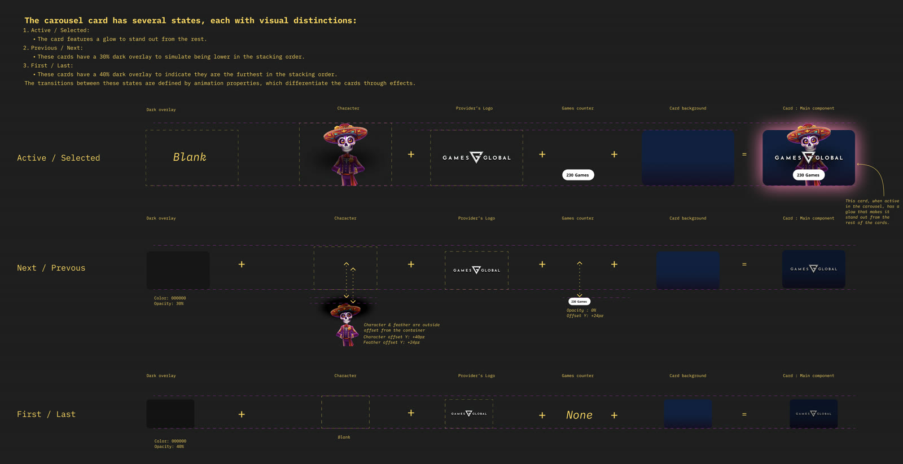
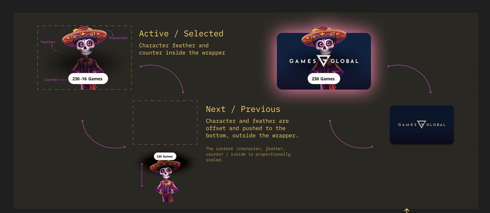
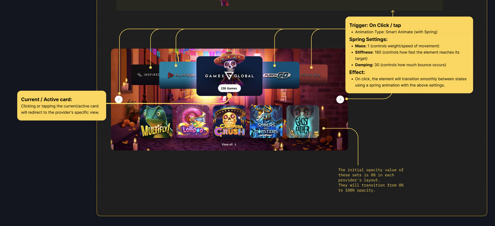

Providers Layout
A weekly "Provider of the Week" placement for Novibet's casino lobby. One provider gets the spotlight each week, its logo, its games, and whatever makes that week's deal worth having. Three layout variants are shipped and in rotation: a carousel carried over from the Jackpot card study, a multi-themed fan carousel, and a tab-based provider series. All three are documented below.
One provider, one week, one spotlight
Every week, Novibet promotes a different casino game provider on the homepage. The choice is a business decision: an exclusive game, a funded player bonus, or simply visibility for a lower traffic provider.
There was no dedicated layout to carry it. My job: one surface that shows a provider's logo, full game lineup, and whatever is special that week, clear enough to strengthen the business team's hand when asking for the next exclusive.
The short version
No surface existed to spotlight one provider properly.
Logo, games, and a special-game callout all needed to live in one place, at a fidelity worth showing providers when asking for more exclusives.
A themed carousel, reusing a pattern that already tested well.
One provider at a time, auto-rotating focus with a glowing active card, each week in its own visual theme. Rotation and pin behavior are carried over from the Jackpot card study, not reinvented here.
Two more variants, same data and assets underneath.
A multi-themed fan carousel showing several providers at once, and a tab-based layout with one panel per provider. Both are live too, covered in Preview and Core mechanics below.
What's live today
All three variants are live on Novibet's casino homepage today. Same underlying data and rotation logic, three different ways of presenting it.
Carousel, Jackpot-correlated
Games Global's week shown here, themed around Dia de los Muertos.
Real production capture. Active provider centered and glowing, neighboring providers dimmed on either side, game tiles for the active provider below.
Fewer neighboring cards as the viewport narrows, provider and games stay the focus.
Down to three tiles.
Carousel, multi-themed
Five providers fanned across the stage at once instead of one at a time. Desktop capture only, this variant collapses to a swipeable stack below 768px.
Focused card centered and enlarged, two Near cards tilted in on either side, two Far cards tilted further out at the edges.
Tab-based, provider's series
One tab per provider. Switching tabs swaps the whole panel, colors, character, and games, with a sliding transition.
Tongue slides between tabs, panel content parallaxes in and out.
Games sit outside the panel.
The layout needed a provider logo, its games, and a special-game callout (exclusive, hot, new) for when a true exclusive isn't available, plus a minimum of six games to stay visually balanced. Element list: category icon and name, background image with parallax, provider logo, special game title, game tiles and names, and an "All" link. All three variants build on this baseline.
A pattern that already earned its place
No new study was run for this project. The design reuses the prototype the Jackpot Layout study already validated, rather than relitigating a rotation pattern on a second surface.
The Jackpot Layout study ran a moderated evaluation with 8 participants across two prototypes: a compact/focused card and a rotating, auto-advancing card. Both directions were accepted, not a single winner. Compact/focused became the Jackpot card. The rotating one, auto-advance, hover-pin, and pause behavior included, was carried over here as the Providers carousel, along with the same order and sort-by config, so neither surface had to argue the pattern twice.
Version 1 shipping without its own study was deliberate, the interaction had already passed a task-based usability test on the Jackpot surface. Versions 2 and 3 are new enough directions that they'll likely need their own look before shipping.
How might we spotlight a provider well enough to negotiate with?
No dedicated surface. Provider deals happen every week, exclusives, bonus trades, a visibility push, but nothing on the homepage carried a provider's logo, games, and a special callout together at a fidelity worth showing back to that provider.
A minimum bar, not just a nice-to-have. The brief was explicit: the layout only reads as balanced with at least six games. Anything built for this had to hold up at that minimum, not just when there are many.
Three variants, three ways of putting a provider in focus
All three share the same provider data and assets underneath. Each solves "which provider is in focus right now" differently.
Carousel, Jackpot-correlated
Three card states
Active / Selected: enlarged, centered, glowing edge, full logo and game count badge, character in full color. Previous / Next: smaller, 30% dark overlay, character and counter pushed outside the card and faded out. First / Last: 40% dark overlay, character hidden, only the logo shows.
Game tiles and navigation
Below the carousel, a strip of the active provider's game tiles (six minimum, per the brief) plus a "View all" link, fading in whenever the active card changes. Arrow controls step through providers, and tapping the active card opens that provider's dedicated page.
Per-provider theming
Each week's provider gets its own visual theme, not a generic wrapper. Games Global's week, shown throughout this page, used a Dia de los Muertos setting: papel picado banners, candles, and a life-size "protagonist" character in matching costume beside the carousel.
Responsive protagonist placement
At 1920 to 1600px, the protagonist stands beside the carousel, alternating sides week to week so consecutive themes don't clash. Below that breakpoint, it moves inside the card instead.

Protagonist stands beside the carousel at full width, then moves inside the card at the two narrower breakpoints below.

Active glows and shows full color. Previous/Next dims to 30% and fades the counter. First/Last dims to 40% and hides the character entirely.

Character, feather, and counter sit inside the wrapper when active. In previous/next, they're pushed outside and below it, proportionally scaled.

Smart Animate with spring physics on every transition: mass 1, stiffness 180, damping 30. Tapping the active card redirects to that provider's view.
The handoff spec is precise on purpose: named overlay percentages per state, exact spring values instead of a vague "ease in," and an explicit rule for where the protagonist lives at each breakpoint. That detail came from documenting the carried-over Jackpot rotation clearly enough for engineering to implement pin and pause without a design re-review every time a new theme comes in.
Carousel, multi-themed
Rather than one provider in focus with the rest hidden, this variant fans several providers across the stage at once, each keeping its own theme colors.
A five-card fan, one focus card
Five cards arranged in an arc: one centered Focus card, full size and readable, two Near cards tilted 8° inward, and two Far cards tilted 16° further out, smaller and dimmer. A click, or a 5.2 second auto-cycle, brings a card to Focus with a curved swing along the arc rather than a straight slide. Hovering any card pauses the cycle.
Two colors drive the whole theme
Each provider hands over two colors, a main and an accent. Card fill, border glow, and the ambient stage tint all derive from those automatically, no hand-picked variants per theme. The Focus card gets a signature detail: a slow rotating gradient border behind the character on a 4 second loop, plus a matching stage glow that shifts the moment focus changes.
Providers or curated collections
The same fan runs two ways from the same config: a providers mode, one card per provider, or a collections mode, one card per curated set of games from a single provider. Same card, same motion, only the chip content and underlying games change.
The horizontal fan only applies on desktop and tablet. On mobile, the arc collapses to a swipeable stack, navigation arrows are hidden in favor of swipe gestures, and the edge-fade effect around the stage turns off.
Tab-based, provider's series
Each provider gets its own tab. Switching tabs swaps the whole colored panel underneath, character, games, and all.
The tab tongue
A single colored shape, the "tongue," slides and resizes behind the tab buttons as the active tab changes. Its shoulders flatten to a square edge when the active tab is first or last, and stay slanted in between, so it reads as one continuous strip rather than separate buttons.
A three-layer parallax switch
Changing tabs slides the old panel out and the new one in, but not all at once: the background moves 20px, the character 40px, the games grid 60px, each layer starting slightly after the last. Direction follows tab order, right always slides left-out then right-in, and the reverse going left.
Tile count steps down with viewport
10 game tiles at full HD and above, 8 at 1600px, down to 4 on tablet, and a horizontal scroll row on mobile. On mobile the games grid also moves outside the colored panel, onto the page background.
Tabs auto-advance every 5 seconds and wrap back to the first after the last. Hovering on desktop, or touching or scrolling on mobile, pauses the cycle immediately, resuming a full interval after the interaction ends so it never jumps the moment someone lets go.
This carousel was the starting point, adapted from the Jackpot layout design. Two more Providers layout variants have since shipped alongside it, all in rotation together, all reusing the same assets and attributes (provider logo, character, game tiles, special-game callout) instead of needing their own. A deliberate scalability call: the content team never produces a new asset set just because a different layout is chosen that week.
Shipped, no metrics collected yet
All three variants live and shipping
This carousel plus the two other Providers layout variants are all in production and rotation. No usage metrics have been collected on this surface yet.
A real negotiating asset
The layout gives the business team a concrete, high-fidelity placement to show providers when asking for the next exclusive, the reason this project exists in the first place.
No re-litigated rotation logic
Reusing the Jackpot study's accepted prototype meant the auto-rotate, hover-pin, and order/sort-by configuration shipped once and didn't need a second round of validation on this surface.
One asset set, three layouts
The other two variants reuse this one's assets and attributes instead of needing their own, so the content team produces a provider's logo, games, and callout once and it works across whichever layout is chosen that week.
Honest notes on the build
A reused pattern still needs a real spec for its new context.
The rotation logic itself wasn't new, but applying it to a fully themed, per-provider background meant the breakpoint and offset rules for the protagonist character had to be worked out from scratch.
The six-game minimum is a real constraint, not a suggestion.
Smaller providers with fewer available games are the harder case for this layout to stay balanced. Worth watching as more providers rotate through it.
Shipping without new metrics is a known gap, not an oversight.
This went out on the strength of the reused, already-tested rotation pattern. Usage data on the Providers surface specifically is still worth adding.